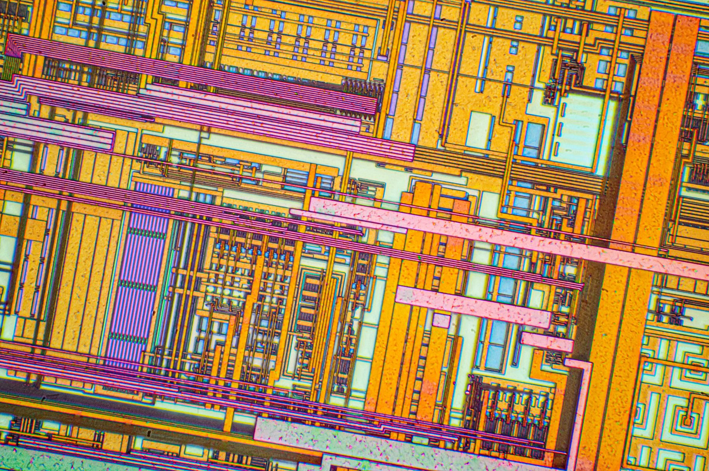
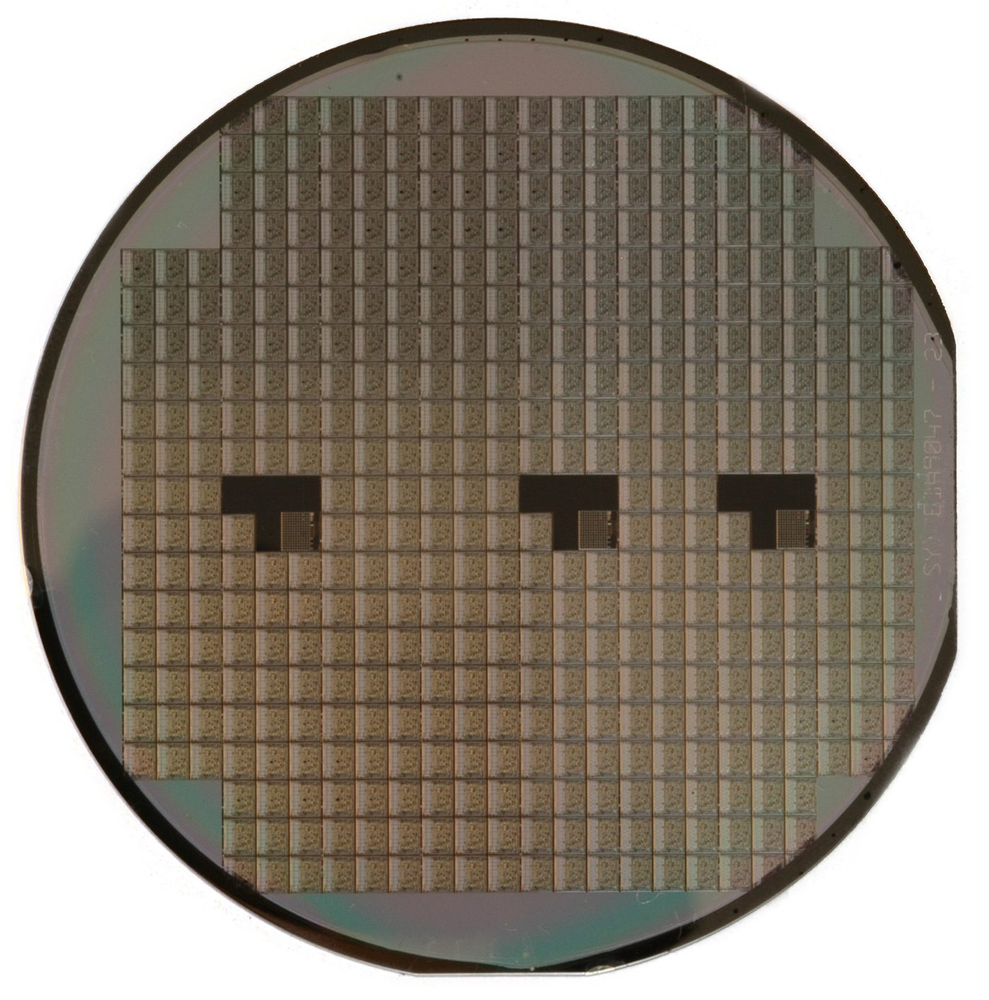
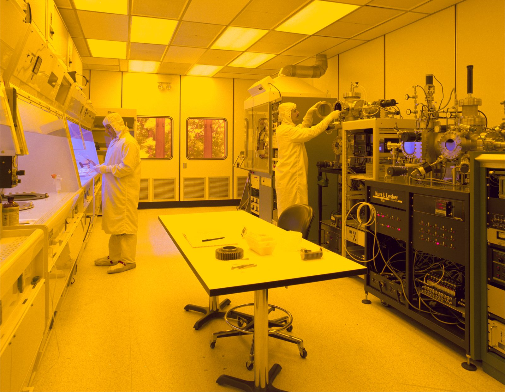

July 19, 2026 · Week 2 · Prompt #2
Reading Silicon Valley Through Its Objects
A silicon chip is easy to overlook. It is small, flat, and visually unremarkable to anyone who does not know how to read it. Inside, however, it holds an entire history of design decisions, manufacturing constraints, testing procedures, labor, failure, and revision. To an engineer, a chip is not simply a finished product. It is evidence.

My project is grounded in semiconductor objects, particularly chips, circuit boards, package markings, layout images, patent diagrams, and photographs of fabrication and assembly work in Silicon Valley. I am interested in what these objects can reveal about the history of the technology industry that corporate archives and founder narratives often leave out.
Silicon Valley history is usually organized around famous individuals, major companies, venture capital, and moments of invention. This approach creates a recognizable story, but it is also incomplete. It emphasizes the people who founded companies, filed patents, gave interviews, and wrote memoirs. It gives much less attention to the physical objects that made those companies possible and to the workers who manufactured, assembled, tested, and repaired those objects.
This topic matters to me because I have participated in tapeout, the stage when a chip design is finalized and sent for fabrication. That experience changed how I understand technical objects. I can look at a chip or board and recognize traces of decisions that are invisible to a general audience. I can think about layout constraints, manufacturing rules, interfaces, packaging choices, and the long sequence of verification that must occur before a physical device exists.
This technical knowledge gives me a particular way of reading objects. A board revision can show that an earlier design failed. A patent diagram can show what a company wanted to claim, while the object itself may show what could actually be built.

One important way of knowing that I want to incorporate is tacit engineering knowledge. This is the practical knowledge that engineers and technicians develop through experience but do not always record formally. It includes knowing which design rule can be pushed, which measurement is misleading, which failure pattern suggests a packaging problem, or which tool behaves differently from its documentation.
Brückner and Isenstadt describe the difficulty of treating material culture as an archive because objects do not speak in the same direct way as written documents. They require interpretation. Their meaning depends on context, physical examination, comparison, and knowledge of use. This difficulty is also what makes objects valuable. They can preserve evidence that formal records exclude.
A second way of knowing is labor knowledge. Silicon Valley was built not only by engineers and executives but also by fabrication workers, assembly workers, technicians, operators, inspectors, and cleaners. Many were immigrant women whose labor was treated as routine, even though semiconductor production depended on their concentration, dexterity, and judgment.

These workers understood the industry through their bodies and daily practices. They knew how materials behaved, how defects appeared, how equipment sounded, how production pressure affected quality, and how repetitive exposure affected their health. Their knowledge may not appear in patents or corporate histories, but it is essential to understanding how the industry functioned.
Michelle Caswell's discussion of record making is useful here because records are not neutral containers of the past. Records are created through decisions about what counts as evidence, who has authority, and what institutions consider worth preserving. Corporate records are designed to serve corporate purposes. These sources are valuable, but they were not created to preserve every worker's experience or every form of knowledge.
My project would challenge traditional documentary practices by treating objects and labor testimony as central evidence rather than supplementary illustration. Traditional histories might begin with a patent, a founder's memoir, or a company archive. My project would begin with a chip, board, tool, production photograph, or oral history excerpt. It would ask who designed it, who handled it, who assembled it, who tested it, and what forms of knowledge were required at each stage.
This approach also complements documentary evidence. Objects cannot provide every answer. A chip cannot independently explain the conditions under which it was manufactured. A photograph cannot reveal every worker's experience. Patent records, corporate documents, oral histories, and physical artifacts must be read together.
The National Archives discussion of intrinsic value helps explain why the original object matters. A digital image can preserve visual information, but the physical artifact contains scale, weight, texture, construction, damage, markings, and evidence of use. A scanned circuit board is not identical to the board itself. The original can reveal rework, residue, heat damage, component replacement, and manufacturing technique.
The Peel Archives discussion of archival selection raises another question: who decides what is kept? Institutions often preserve records associated with powerful individuals and established organizations because those records are easier to identify, describe, and justify. Ordinary technical objects may be discarded as obsolete equipment. Worker testimony may disappear because no institution collected it. The absence of evidence is therefore not always evidence of insignificance. It may reflect the priorities of archives, corporations, collectors, and historians.
For a public audience, I want this project to make Silicon Valley look unfamiliar. Instead of presenting the region only as a landscape of invention and entrepreneurship, I want to present it as a landscape of materials, factories, skilled labor, contamination, precision, and memory. The public should be able to see a chip not as a mysterious black box but as a historical object shaped by many people.
Ultimately, this project argues that the physical remains of the semiconductor industry are not secondary to Silicon Valley history. They are part of the archive. Reading them carefully can recover forms of engineering and labor knowledge that traditional documentary sources often overlook. It can also shift the history of technology away from a narrow story of founders and inventions toward a broader account of the people, practices, and objects that made the industry possible.